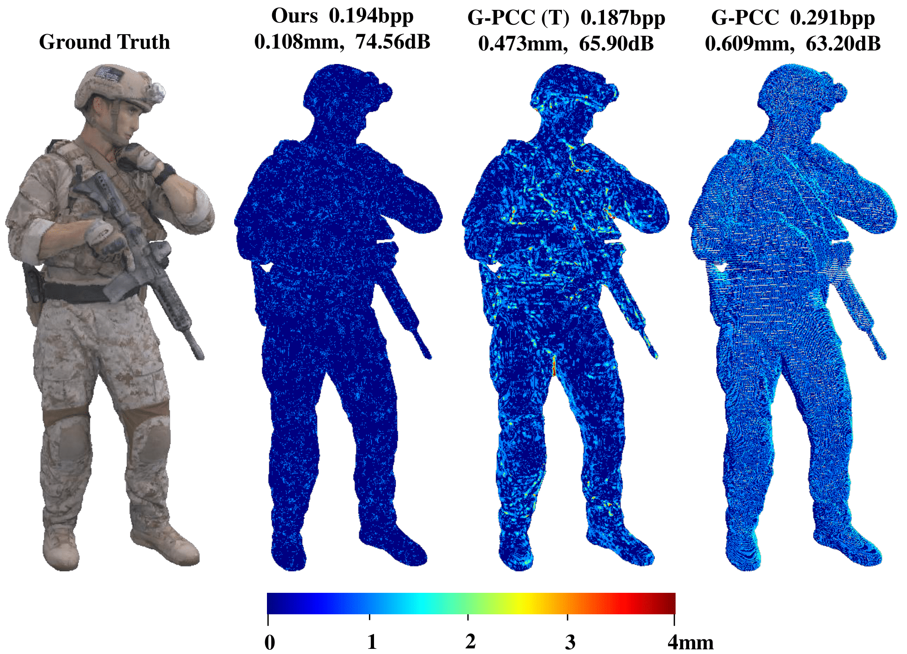
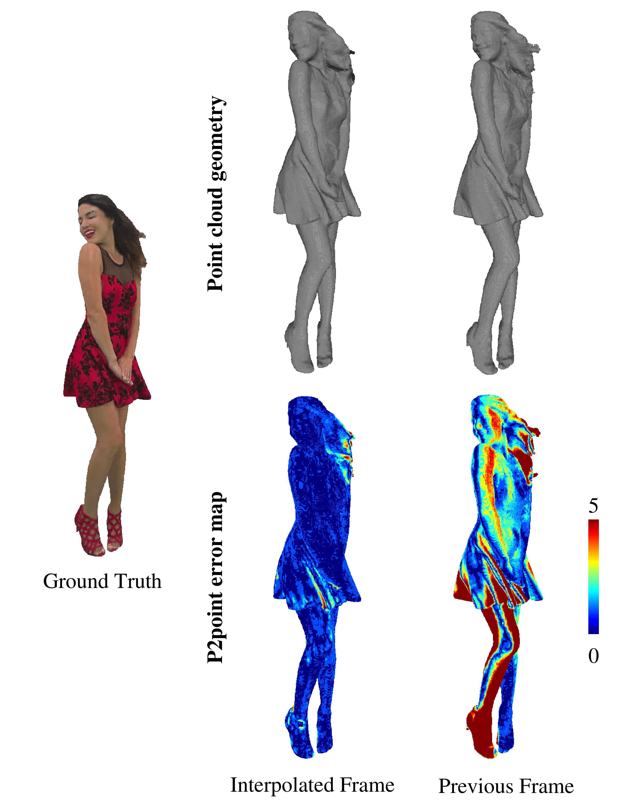
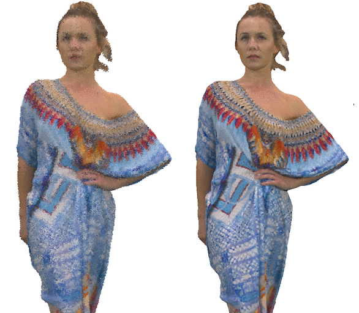
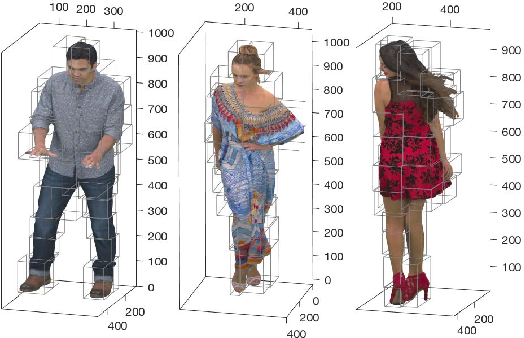
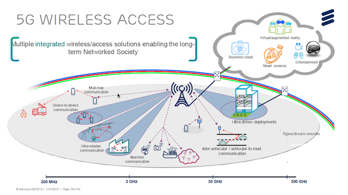

Gallery
|  | Inter-prediction in Point Cloud Compression with Sparse Convolutional Networks |
|  | Dynamic Point Cloud Interpolation. (pdf) |
 |
Video-based Point Cloud Compression (V-PCC) Artifact Removal. (pdf) |
 |
Point Cloud Geometry Prediction Across Spatial Scale. (pdf) |
 |
2D Penoptic Segmentation on street level imagery (SLI) from HERE True Drives. |
|  | Point Cloud Denoising. |
 |
3D Semantic Segmentation on HERE True LiDAR Data. |
 |
Realtime 3D Point Cloud Communication. |
|  | Service-Oriented Robotic Simulation Implementation. |
Approach for the formal specification and verification of multi-agent robotic systems. |
 |
An Architecture for Secure Video Streaming in Multicast environment |
|  | Design and development of a formal multi-agent information management system. |
 |
Luddo 3D - Design and development of 3D Ludo gameLuddo 3D - Design and development of 3D Ludo game. |